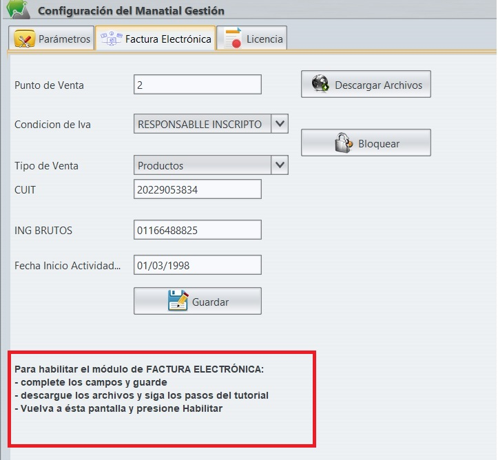
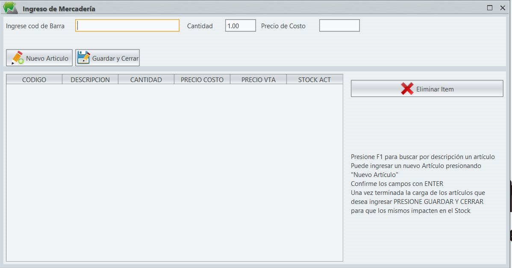

El proceso de instalación consiste en descomprimir el archivo ZIP y ejecutar el archivo Setup.exe que está dentro del archivo descomprimido.
Una vez hecho ésto se deberá llenar el formulario de registro para que el sistema culmine con las tareas de generación de las carpetas necesarias y
parámetros para su funcionamiento.

Una vez culminado el proceso el sistema avisará que está concluido correctamente y pedirá ingresar nuevamente al sistema, ahora lo deberá hacer desde el icono creado en inicio o en su escritorio
Licencias
El sistema lee el registros e licencias y lo actualiza, como default se toma una licencia gratuita que posee una cantidad de presupuestos a emitir (impacten en caja o no) y una xx cantidad de facturas electrónicas
Si el sistema le informará al iniciarse si le quedan pocos comprobantes ( de igual modo se puede visualizar en Configuración->Licencia)
El sistema bloqueará el acceso al sistema si la fecha está caducada y no se ha renovado licencia
Configuración FACTURA ELECTRÓNICA
Como primera instancia, llenar los campos solicitados en Configuración->Factura Electrónica, tener en cuenta que para el correcto funcionamiento del módulo de factura electrónica todos loc números de CUIT se cargan sin ningún tipo de caractér especial ni espacio, simplemente todos los números de corrido
Para su configuración se requieren realizar acciones tanto en el sistema como en el portal de afip para su registro y permiso de utilización por parte de AFIP. Como primera medida en el portal de AFIP deberá tener registrado o habilitado un punto de venta para "Factura Electrónica WebService"
Una vez descargados los archivos, descomprimir el archivo ZIP obtenido, dentro del mismo se encontrará con 2 archivo que van a ser necesarios para generar lso certificados en el portal de AFIP
El archivo con nombre xxxxx_clave.key, renombrarlo por clave.key
El otro archivo es necesario para generar el certificado de AFIP.
Para gestionarlo se usa el Administrador de Certificados Digitales. Si el menú no existe se debe agregar mediante el Administrador de Relaciones de Clave Fiscal.
Para certificados de produccion: https://www.youtube.com/watch?v=v6r4D3Ljuy8&t=230s )
4 - Luego de haberlo generado y descargado el certificado procedemos a habilitar el web service. El video de este link https://www.youtube.com/watch?v=J4-Mg6aS63Y muestra como hacerlo.
5 - Finalmente el archivo clave.key (la copia creada y renombrada anteriormente) y el certificado descargado, (renombrarlo como certificado.crt) son los que vamos a utilizar, los mismos deben copiarse y guardarse en la misma carpeta donde está alojado el archivo Manantial.exe.
Una vez cumplidos éstos pasos, hacemos click derecho, ejecutar como administrador sobre el archivo registrar.bat que se encuentra junto con Manantial.exe en la carpeta, si el proceso se realizó satisfactoriamente un cartel no indicará que se han registrado las librerías o dll para la factura electrónica
Ya culminados los pasos de registro en AFIP y en el equipo, solamente resta volver al sistema y en Configuración->Factura electrónica, presionar el botón habilitar, salir del sistema y con ésto el punto de venta estará registrado
Cajas
Muestra el listado histórico de movimientos de caja, para ellos seleccionar la fecha de caja y presionar filtrar , el sistema mostrará el listado de movimientos que corresponden a dicha fecha
Informes
En ésta pantalla el sistema permite generar por un rango de fechas 3 informes:
Informe de Clientes: genera un listado de clientes con sus saldos actualizados en un rango de fechas.
Informe de Proveedores: genera un listado de proveedores con sus saldos actualizados
Informe de Ranking de Artículos:genera un excell con un listado decreciente de artículos más vendidos en el rango de fecha indicado
Formas de Pago
En ésta pantalla se pueden agregar nuevas formas de pago o editarlas.
Para Agregar nueva forma de pago, debe presionar el botón "Nueva Forma de Pago" y completar los campos descripción y "% recargo" si lo quiere aplicar, luego presionar el botón Guardar
Para Modificar una forma de pago, debe seleccionarla en la lista desplegable y le aparecerán los datos cargados en los campos correspondientes, modifique el dato que corresponda modificar y presione el botón de Guardar
Archivos IVA
En ésta pantalla por medio de un rango de fechas permite que se generen los archivos para el citi ventas y citi compras así como también el excel de iva ventas y compras
Ingreso de Mercaderías
Ésta pantalla permite ingresar en stock los productos, el proceso es similar al ingreso de una factura, permite generar nuevos Artículos o modificar el precio de costo de los mismos
Para comenzar con el ingreso de productos, cargueló por código de barras o bien busque por descripción ingresando parte de la misma y presionando F1, en la pantalla que se despliega seleccione el artículo que desea cargar y presione ENTER,Todos los campos se comfirman con ENTER, luego cargue la cantidad y modifique si lo desea el precio de costo.
El artículo cargado le aparecerá ingresado en la grilla inferior con los datos cargados, puede eliminarlo si lo desea.
Una vez terminada la carga o ingreso de todos los artículos que desea en la grilla inferior, presione Guardar y Cerrar para culminar el proceso y que el sistema guarde el/los movimientos que cargo en el stock
Artículos
Ésta debe ser una de las pantallas más importantes del sistema. En ella se permite visualizar todos los artículos cargados, generar nuevos, modificarlos, modificar masivamente precios de costos o ventas por rubros y porcentajes, filtrar para poder ingresar individualemente a los detalles de cada Artículo, Listar todos los artículos o Listar un resumen de Stock general
Artículos Nuevos simplemente presionar el botón "Nuevo Artículo", se abrirá una pantalla para cargar los datos del artículo a incoporar al sistema. En el campo código de barras, pase el lector y el mismo se cargará con el código correspondiente, en caso de no contar el artículo con un código de barras, déjelo en blanco, el sistema le generará automáticamente uno.
Una vez completos todos los campos presionar "Guardar"
Modificación de Artículos hay varias opciones para ingresar a la pantalla de modificación de artículos:
-Seleccionar el Artículo de la grilla y presionar el botón "Modificar Artículo"
-Filtrar el Artículo por descripción en el campo a la derecha y seleccionándolo de la pantalla emergente
-Filtrar el Artículo por código de barras en el campo a la derecha y seleccionándolo de la pantalla emergente
Cualquiera de las opciones mencionadas son válidas para abrir la pantalla de modificación de Artículos, a diferencia de la pantalla de nuevo artículo en ésta nos permite generar etiquetas de código de barras en base al código cargado del artículo, solamente deberá presionar el botón y completar en las pantallas emergentes cuantos códigos desea generar (cantidad total) y cuando códigos cargar por fila. Se generará un pdf para que pueda imprimirlo y re utilizarlo
Modificaciones de precios de costos y venta masivos por rubro para ellos debe seleccionar el rubro que quiere modificar, luego cargar en el campo correspondiente (precio de costo o precio de venta) el valor numérico del porcentaje a modificar, si su intención es bajar el precio el porcentaje debe ser negativo (ej -10 para -10%), luego presione el botón correspondiente para que se realice el proceso. La grilla con el detalle se actualizará al hacer un click sobre la pantalla
Rubros
Tiene un funcionamiento similar al de administración -> Formas de Pagos.
En ésta pantalla puede cargar nuevos rubros ( para ser asignados a los Artículos luego en la pantalla de carga de nuevos artículos o modificación de los mismos. O puede modificar la descripción de algún rubro ya cargado o asignarle un porcentaje de recargo en un modo similar a lo que se realiza en la pantalla de Artículos
Ajuste de Stock
Permite corregir errores que se generen o se detecten en el stock, consiste en cargar el artículo por código de barras (o bien buscarlo por descripción con F1), aparecerá en el campo cantidad la cantidad actual en stock, debe reemplazarla por la cantidad real de dicho stock y con ENTER confirmar. Ésto hará que se cargue la grilla inferior con el detalle del movimiento a realizar.
Para finalizar presione "Procesar" para que el sistema ajuste todas las cantidades como figuran en la grilla inferior
Importar Artículos Por Excel
Permite la carga masiva de artículos al sistema, como primera instancia debe seleccionar el archivo excel que contiene la información. Luego seleccionar las columnas del archivo que contiene la información que se consulta en la pantalla (código de barras, descripción, precio de costo, precio de venta) y presionar "Cargar", al finalizar el sistema le informará cuántos registros exitosos proceso y con ésto estarán cargados los artículos en el sistema
Generar Etiquetas
Permite la generación de Etiquetas para góndolas o muestrarios, en ella permite imprimir las etiquetas en un formato de hoja A4, ocupando 2 etiquetas de ancho.
Se debe ingresar el codigo de barras o bien buscar con F1 por descripción, en la grilla inferior aparecerán los resultados, debe seleccionarlos y agregar dicha selección con el botón "Agregar Selección". Previamente deberá ingresar si quiere incluir algún comentario y si se incluye la impresión del código de barras en la etiqueta.
Una vez cargadas las distintas selecciones (puede seguir seleccionando y cargando tanto como lo desee), presione imprimir para que la selección completa sea enviada a la impresora
Facturación / Nota de Crédito / Nota de Débito
Éstas 3 pantallas si bien generan resultados diferentes el funcionamiento es idéntico. En caso de que no se haya optado por habilitar la factura electrónica la primera es la que generará los presupuestos, según su elección éstos pueden impactar o no en caja.
El método de funcionamiento consiste en:
-Selección de Cliente
-Ingreso de Artículos
-Emisión de Comprobante
Selección de Cliente para ellos puede presionar el botón para cargar uno nuevo y completar los campos para su ingreso (tener en cuenta que el cuit es un valor solamente numérico por lo que no es conveniente cargar "-" o espacios).
O bien asignar un cliente al comprobante, mediante el botón "Ingresar Cliente", donde se busca el cliente por razón social, se lo selecciona en la grilla de resultados y se presiona el botón inferior para volver a la carga del comprobante
Ingreso de Artículos ésta carga se realiza por medio del lector de código de barras o bien con F1 buscando por descripción del artículo y seleccionándolo dentro de la grilla de resultados en la pantalla emergente.
La cantidad predeterminada en 1 pero con F3 se puede cargar la cantidad deseada
La información de los artículos cargados en el comprabante que se está generando aparece en la grilla inferior
Emisión de Comprobante, una vez cargado todo el detalle del comprobante, se puede presionar F4 para imprimir un "Presupuesto" o bien (si se ha habilitado) se puede presionar el botón de factura electrónica para que se genere la misma. En éste caso se abrirá como resultado un pdf con el documento generado y aprobado por AFIP
Arqueo de Caja
Permite visualizar e ingresar movimientos en la caja actualmente abierta
En la grilla izquierda se visualizan los distintos movimientos realizados, pudiendo al hacer click sobre alguno de los comprobantes visualizarlo y/o re imprimirlo
El selector central permite realizar los movimientos habilitados en caja, cargando según sea necesario descripción del movimiento y monto
El campo hacia la derecha es un resumen de los movimientos registrados en la caja
Cierre de Caja
Genera el cierre de caja, armando un excel con todos lo movimientos de la actual y vaciando los parámetros para iniciar una nueva al re ingresar al sistema. Es un proceso que se realiza automáticamente luego de presionar Cerrar
Aquí crearemos los perfiles de Proveedores y se realizará el seguimiento de los movimientos que se carguen, el que el proveedor esté cargado o no, no infiere en la carga de Artículos dado que son dos procesos independientes
Nuevo Proveedor
Abre una pantalla solicitando los datos del mismo, una vez completos los datos disponibles se presiona "Guardar" para que quede registrado en el sistema
Perfil
Aquí es donde se pueden visualizar los distintos datos cargados y registrar los movimientos que corresponden a la carga de facturas de compra, las mismas generarán luegos los archivos de citi compras e iva compras.
Primero se debe seleccionar el proveedor de la grilla inferior y luego presionar "Perfil"
Ya dentro de perfil, en la pestaña "movimientos" se pueden cargar las facturas de compra presionando "Ingreso de Facturas" o visualizar las cargadas presionando "Visualizar Factura", al lado de éste último botón nos informa el sistema el saldo actualizado.
Tener en cuenta que el pago o el ingreso de los pagos se realiza por medio de los movimientos en caja
Muy similar en el funcionamiento a la Pantalla de Proveedores
El la grilla central no muestra los clientes registrados en el sistema y los datos más relevantes de los mismos
Nuevo Cliente
Nos permite al igual que en Facturación cargar un nuevo cliente, completando los datos del mismo
Saldo
Se debe seleccionar el cliente en la grilla inferior y presionar el botón de "Saldo" en donde nos presentará una nueva ventana con los movimientos del cliente y la opción de descargar ése detalle en un excel
Perfil
Aquí podemos modificar/completar los datos cargados del cliente
Ésta pantalla consta de 3 prestañas, que administran distintas parámetros del sistema y su funcionamiento
Parámetros
Son los parámetros del sistema en sí. Consiste en los datos que personaliza el sistema, los primeros campos son los que luego completan los datos personalizados de impresión, tanto en facturas como en presupuestos
Los datos de mail, son los que requiere el sistema para enviar el mail de cierre de caja con el resumen en excel de la misma
Factura electrónica
Corresponde a los datos cargados para la habilitación del módulo de factura electrónica
Licencia
Informa los parámetros actuales de la licencia que tiene registrada
Para que tengan efecto las modificaciones realizadas en ésta sección debera cerrar el sistema y volver a ingresar en él